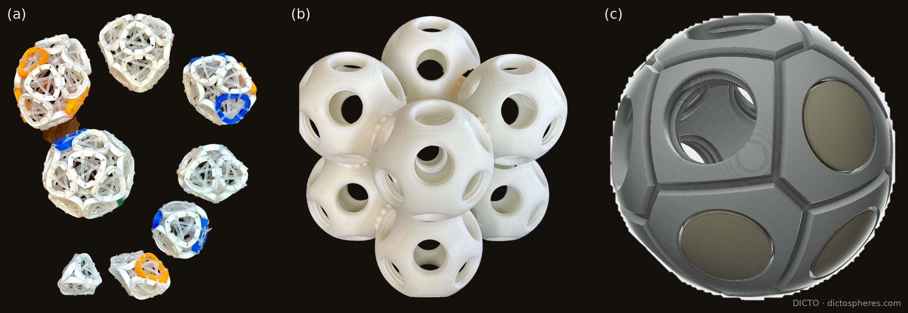
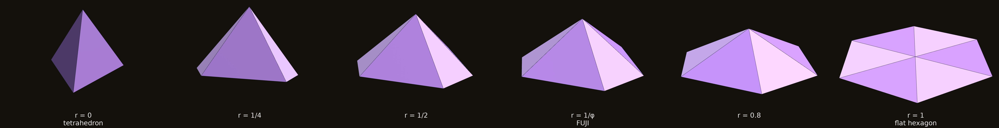
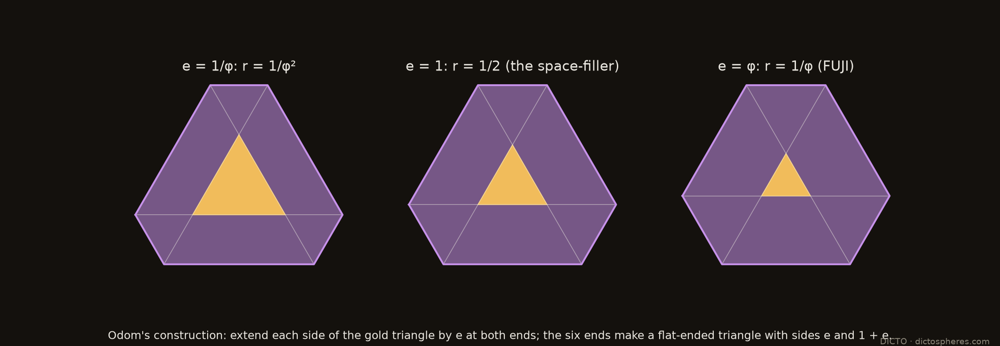
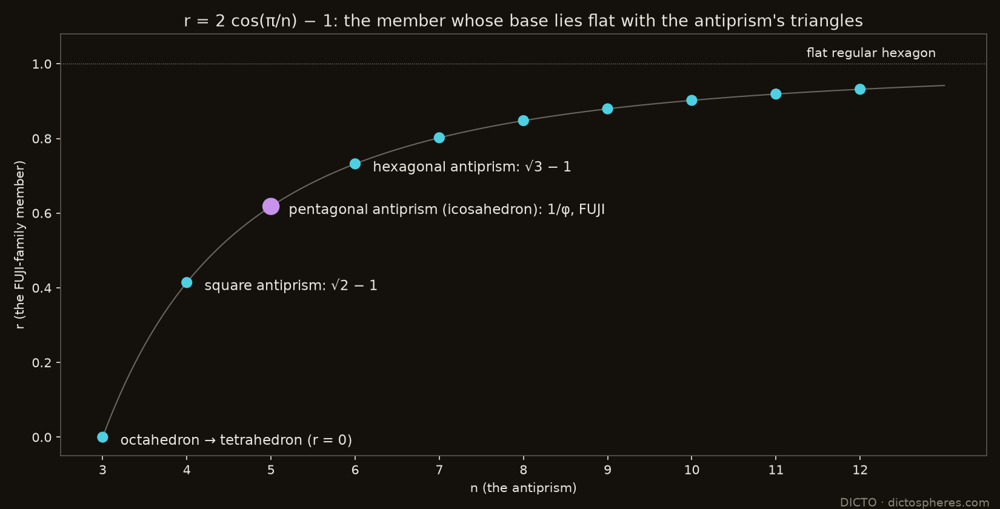
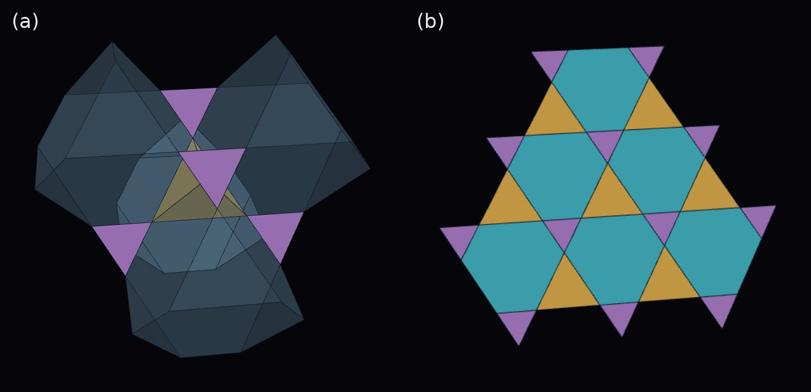
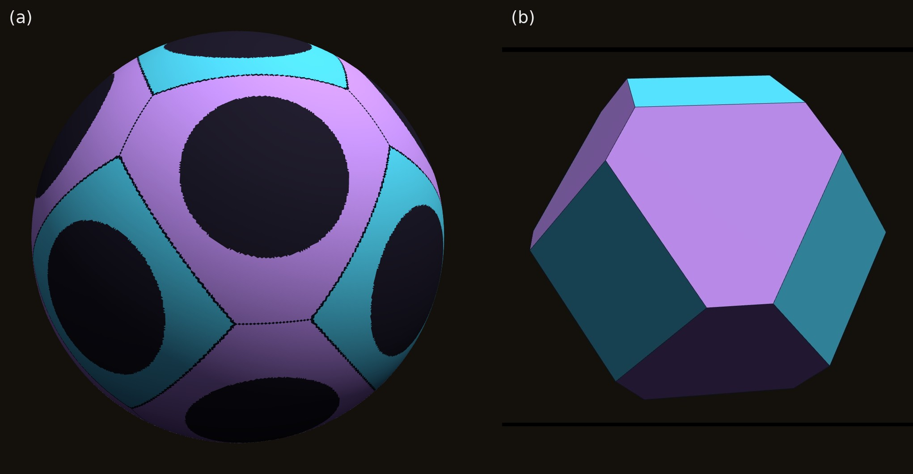

Pyramids on flat-ended triangles: from the tetrahedron through FUJI to the flat hexagon, the antiprism theorem, and the members found in tilings, crystals and DICTO's sculpture
FUJI is the hexagonal pyramid that closes the corners of DICTO's thirteen-icosahedron cluster, the Lotus seed. Its base is a flat-ended triangle: a hexagon with all angles 120° and sides 1 and 1/φ alternating. The same shape kept turning up elsewhere, in DICTO's cuboctahedral PET-bottle spheres and in the colouring of the Lotus seed, so we asked whether FUJI belongs to a family.
It does. Put an apex over a flat-ended triangle with sides 1 and r, with all six side edges of length 1. This gives a one-parameter family FUJI(r), running from the regular tetrahedron (r = 0) through FUJI (r = 1/φ) to the flat regular hexagon (r = 1). We prove:
The members turn up in several places:
FUJI was found as a gap piece. In DICTO's Lotus seed, twelve icosahedra round a small one, the corners where three icosahedra meet are filled by a hexagonal pyramid with all six side edges 1, and DICTO named it after Mount Fuji [DICTO, AXE, CLEO and FUJI]. It is not made of the Mosseri–Sadoc tiles that make its partners AXE and CLEO.
Its base had appeared before. Building cuboctahedral spheres of PET-bottle ports, DICTO wanted sharp equilateral triangles round the ports and settled for blunted, flat-ended ones. Colouring the Lotus seed, he hoped for regular hexagons and found the same flat-ended triangles. His DeltaZip and B1NR sculptures use rounded triangles, the curved form of the same idea.

Figure 1. DICTO's work. (a) DeltaZips: deltahedra built from rings tied with zip ties, each ring a rounded triangle. (b) Thirteen dictospheres joined, twelve round one. (c) A dictosphere design, with caps on some of its ports. Photographs and design: DICTO.
The same outline appears at the centre of the DeltaZips logo: the recycling symbol's three arrows make a triangle with its corners taken off. Measured on the logo as a flat-ended triangle with the same reach to the corners and to the sides, the symbol has r ≈ 0.79, and the DeltaZip ring photographed behind it r ≈ 0.48. Both lie well inside the family's range.
This paper takes FUJI's shape as the starting point of a family (Section 2), finds its bases in a classical construction (Section 3), proves which member belongs to which antiprism (Section 4), and follows the members into tilings, crystals and DICTO's sculpture (Section 5).

Figure 2. FUJI(r) at one scale, all side edges 1: the tetrahedron (r = 0), r = 1/4, r = 1/2, FUJI (r = 1/φ), r = 0.8 and the flat hexagon (r = 1). Darker faces: the three equilateral triangles; lighter: the three isosceles triangles 1, 1, r.
The base. A flat-ended triangle with sides 1 and r is a big equilateral triangle of side 1 + 2r with an equilateral corner of side r cut off at each corner. In the literature it is the isogonal hexagon or truncated triangle t{3}. All six corners lie on one circle, of radius² (1 + r + r²)/3. So an apex at height h over the centre has all six side edges equal, and they are 1 when
h² = (2 − r − r²)/3.
The volume is (√3/12)(1 + 4r + r²) h. The side faces are three equilateral triangles (on the long sides) and three isosceles triangles 1, 1, r (on the short sides), with apex angle 2 arcsin(r/2).
The base angles (proofs in the appendix):
cos L = (1 + 2r)/3 on the long sides, cos² S = (2 + r)/(3(2 − r)) on the short sides.
| r | member | height | angle L | angle S | side faces |
|---|---|---|---|---|---|
| 0 | regular tetrahedron | √(2/3) | 70.53° | four equilateral | |
| 1/4 | 3/4 | 60° | 49.11° | ||
| 1/2 | 0.6455 | 48.19° | 41.81° | ||
| 1/φ | FUJI | 1/√3 | 41.81° | 37.38° | isosceles faces are golden triangles (36°) |
| 1 | flat | 0 | 0 | 0 | six equilateral triangles in one plane |
Two of the angles are the same angle, 41.81° = arccos(√5/3). In the Lotus seed this is the gap two icosahedra leave either side of a shared edge. It appears as FUJI's long-side angle and as the r = 1/2 member's short-side angle. The formulas show why: cos² L = 5/9 exactly at r = 1/φ, and cos² S = 5/9 exactly at r = 1/2.

Figure 3. Extend each side of the gold triangle by e at both ends: the six ends make a flat-ended triangle with sides e and 1 + e. With e = φ (right) it is FUJI's base.
George Odom's construction relates the golden ratio to the equilateral triangle [Wolfram Demonstrations, Hexagons and the Golden Ratio]. Extend each side of an equilateral triangle by the golden ratio at both ends, and the six outer points form a hexagon whose two side lengths are in the golden ratio.
Rebuilt here for any extension e: the six points always form an equiangular hexagon with sides e and 1 + e, a flat-ended triangle with r = e/(1 + e). So every member of the family has an Odom hexagon as its base. The golden extension e = φ gives r = 1/φ, FUJI's base. The extension e = 1 gives r = 1/2, the base of the member in Section 5.2.

Figure 4. The member that matches each antiprism: r = 2 cos(π/n) − 1. FUJI is the five-fold member.
In the Lotus seed, FUJI's base lies in one plane with the icosahedron triangles on its long sides: 41.81° + 138.19° = 180°. For any solid X with unit triangles, the same happens when L + D_X = 180°, where D_X is the solid's dihedral angle at the triangle's edge. That is, when
r = (−3 cos D_X − 1)/2.
| Solid (angle at the triangle's edge) | member r |
|---|---|
| icosahedron, pentagonal antiprism (138.19°) | 1/φ: FUJI |
| cuboctahedron, triangle to square (125.26°) | (√3 − 1)/2 |
| square antiprism (127.55°) | √2 − 1 |
| rhombicuboctahedron, triangle to square (144.74°) | (√6 − 1)/2 |
| octahedron (109.47°) | 0, the tetrahedron |
Theorem. For the n-gonal antiprism with unit edges, the matching member is r = 2 cos(π/n) − 1.
Proof (outline; in full in the appendix). Place the antiprism's corners at T_k = (R cos 2kθ, R sin 2kθ, h) and B_k = (R cos (2k + 1)θ, R sin (2k + 1)θ, −h), with θ = π/n and R = 1/(2 sin θ). The two equilateral triangles on the side edge T₀B₀ have their third corners T₁ and B₋₁, each √3/2 from the edge's midpoint M. A short computation gives (T₁ − M)·(B₋₁ − M) = −(4 cos θ − 1)/4. So cos D_n = (1 − 4 cos(π/n))/3, and r = (−3 cos D_n − 1)/2 = 2 cos(π/n) − 1. ∎
The antiprisms therefore index the family:
The Lotus seed is a regular icosahedron of edge φ², exactly: 12 icosahedra, a small centre, 60 AXE, 20 FUJI and 20 CLEO, or DICTO's 63-piece build of a dodecahedron, 12 J11, 30 AXE and 20 FUJI [DICTO, AXE, CLEO and FUJI]. Each of its 20 big faces is three icosahedron triangles and one FUJI base. FUJI is the five-fold member of the family, which is why it belongs to the icosahedron.
Damasceno, Engel and Glotzer studied truncated tetrahedra from the tetrahedron to the octahedron, and found that the member at truncation t = 1/2 fills space on its own [Damasceno et al. 2012]. Its four hexagons have sides in the ratio 2 : 1 (checked from their published corners): they are the r = 1/2 member's base, Odom's hexagon with e = 1.

Figure 5. The Golden Breathing Pyrochlore world in the Kaleidohedra app. (a) Big (gold) and small (purple) tetrahedra meet tip to tip, with see-through truncated tetrahedra between them. (b) One kagome layer: every hexagon is FUJI's flat-ended triangle.
A pyrochlore is a network of tetrahedra sharing corners: every corner belongs to one "up" and one "down" tetrahedron, tip to tip. In a breathing pyrochlore the two sets have different sizes, edge 1 and edge r. Such materials exist among the chromium spinel oxides [Okamoto et al. 2013]. Every kagome hexagon then has sides 1 and r alternating, with all angles 120°: the flat-ended triangle with the breathing ratio as its r.
The space between the tetrahedra is filled by two kinds of truncated tetrahedra, both with flat-ended-triangle hexagons. The tetrahedra and truncated tetrahedra fill space exactly for every r; we checked volumes, faces and neighbours for r from 0.2 to 1. So the breathing pyrochlore is the FUJI family made into a crystal:
It can be built cell by cell in the Kaleidohedra app, with a slider for the breathing ratio.

Figure 6. (a) A dictosphere modelled as a sphere 8.8 cm across with 3 cm ports: each point of the surface belongs to its nearest port. The curved squares (cyan) and curved flat-ended triangles (wisteria) meet short side to short side. (b) The flat counterpart: the solid whose 14 faces all touch the sphere, whose triangles are the cuboctahedral member r = (√3 − 1)/2.
A dictosphere is a sphere. It carries 14 PET-bottle ports in a cuboctahedral arrangement: 6 on the cube axes (the squares) and 8 on the three-fold axes (the triangles). DICTO divides its surface round the ports into squares and triangles. With ports in both, the triangles' corners crowded the neighbouring holes, so he truncated the triangles to give even space round every port. The truncated triangles meet short side to short side.
Even space fixes the pattern. On a sphere, an even margin round every port means that each point of the surface belongs to its nearest port. The squares and triangles are then the regions of the sphere nearest each port. Their boundaries are arcs of great circles halfway between neighbouring ports, and the triangles come out as curved flat-ended triangles. Projected from the centre onto flat planes, the same pattern is the solid whose 14 faces all touch one inner sphere (Figure 6b): the cube ∩ octahedron with both sets of faces at the same distance. Its flat-ended triangles are exactly the cuboctahedral member, r = (√3 − 1)/2 = 0.366. (The same rule in the flat: across an edge shared by two faces, the clearances from the two face centres to the edge are equal exactly when the faces lie at the same distance from the centre.)
Against DICTO's dictosphere. The sphere's size comes from DICTO's steel-tape measurement: 8.4 cm along the surface between the centres of two triangles on either side of a square, an arc of 109.47°, which gives a radius of 4.40 cm. The sides along the surface then follow.
| model on the sphere | flat counterpart | DICTO's dictosphere | |
|---|---|---|---|
| long side (triangle to square) | 3.79 cm | 4.55 cm | about 4 cm |
| short side (triangle to triangle) | 1.35 cm | 1.67 cm | about 1.5 cm |
| r | 0.356 | 0.366 | 0.375 |
The measured sides lie between the curved and the flat versions, as they would for hand measurement with a tape on a curved surface; all three ratios agree within a few per cent.
Building with them. The 14 port directions are the directions of a rhombic dodecahedron's 14 corners, and every edge of a rhombic dodecahedron runs along a three-fold axis. So dictospheres joined triangle port to triangle port build rhombic-dodecahedron frames, which fill space, exactly as DICTO builds them.
The truncated octahedron is the r = 1 member of the same cube–octahedron pattern, with regular hexagons. Every member of the flat family has the same face angles (109.47° and 125.26°), but only the truncated octahedron, whose hexagons are centrally symmetric, fills space by translation (Kelvin's cell). It is to the dictosphere's pattern what the regular hexagon is to FUJI: the symmetric shape at r = 1.
The base shape (the isogonal hexagon), the antiprism angles (listed for single antiprisms in the OEIS), Odom's golden hexagon, the space-filling truncated tetrahedron and breathing pyrochlores are all known, and are credited above. Searches of the literature and of DICTO's reference library (2026-10-14) did not find:
The family gives one shape and one parameter to things found separately:
In each, the parameter r is set by a different symmetry: five-fold for FUJI, cubic for the dictosphere's ports, the breathing ratio for the pyrochlore.
Base angles. The long side lies along a side of the big triangle (side s = 1 + 2r), so its distance from the centre is s/(2√3). The equilateral face on it has slant height √3/2, which gives cos L = (1 + 2r)/3. A cut line lies at distance s/√3 − r√3/2 = (2 + r)/(2√3), and the isosceles face on it has slant height √(1 − r²/4), which gives cos² S = (2 + r)/(3(2 − r)).
Antiprism dihedral. With c = cos θ and s = sin θ, unit side edges give h² = (1 + 2c)/(8(1 + c)). Writing M = (R(1 + c)/2, Rs/2, 0):
With R² = 1/(4(1 − c)(1 + c)), their dot product is
[(4c + 3)(1 − c) − 3(4c − 1)(1 + c) − 2(1 + 2c)] / (16(1 + c)) = −(4c − 1)/4.
So cos D_n = (1 − 4c)/3. The numerical check, n = 4 to 12, agrees to 10⁻¹⁵ (study scripts).
FUJI, the Lotus seed, the dictospheres, the DeltaZips and B1NR sculptures, the term "flat-ended triangle" and the names are DICTO's. Odom's construction, the space-filling truncated tetrahedron (Damasceno, Engel and Glotzer) and the breathing pyrochlore (Okamoto, Nilsen, Attfield and Hiroi) are credited to their authors. Data, scripts, proofs and checks: studies/2026-10-14-fuji-family at https://github.com/DICTOR-Master/kaleidohedra.
DICTO · dictospheres.com